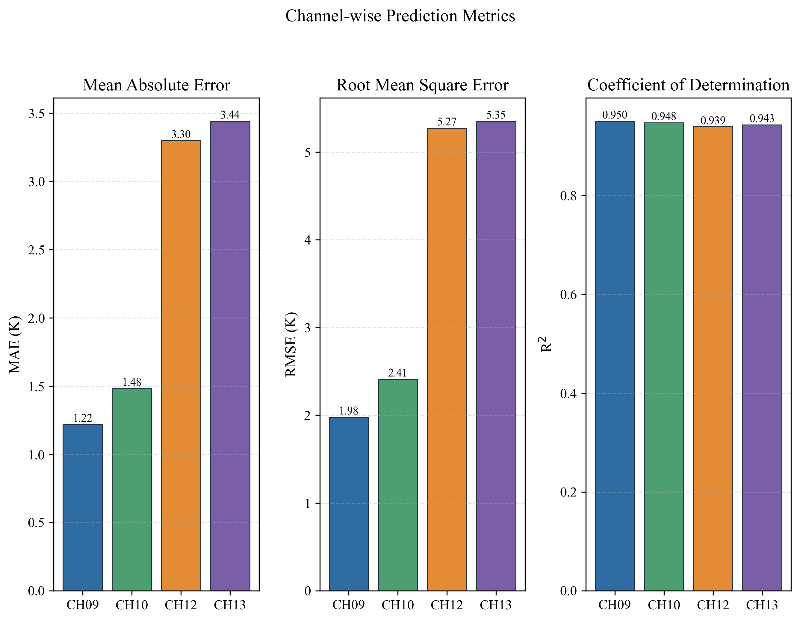
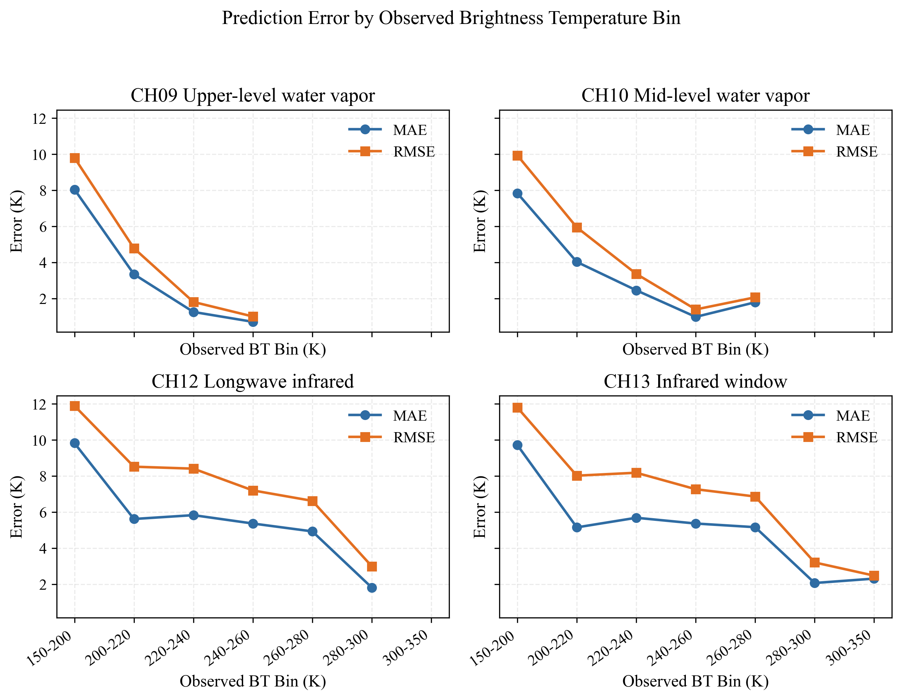
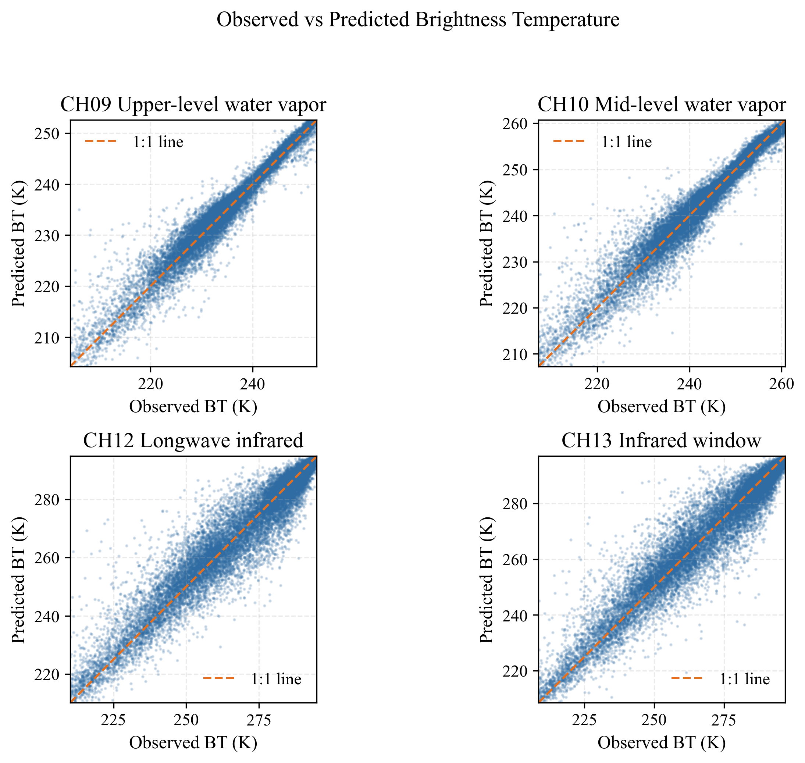
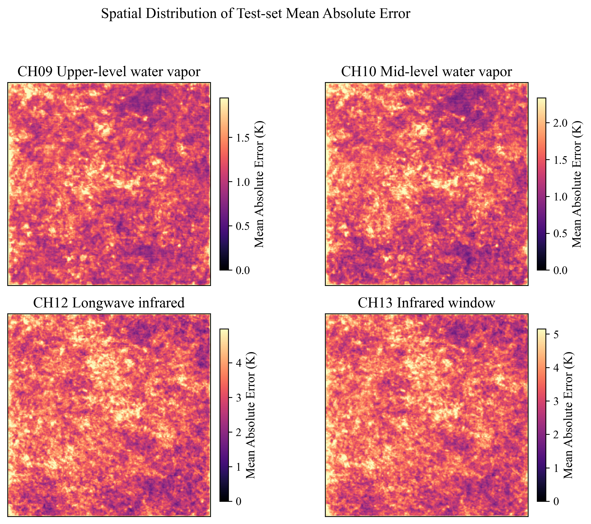

本系统解决的问题
- 黑盒效应: 使用者只看到预测图, 不知道模型数据边界、误差来源和不可靠区域。
- 安全风险: 错误预测可能影响强对流识别、预警研判和应急响应准备。
- 自动化偏见: 使用者可能把模型输出误当成确定结论, 忽视人工复核。
- 责任模糊: 若没有审计记录和责任边界, 错误结果难以复盘。
FY4B-AGRI CNN-Transformer Governance Layer
把亮温预测黑盒模型转化为可解释、可复核、可追责的辅助决策系统, 重点治理黑盒效应、自动化偏见和错误预测对人身安全的影响。
本页展示模型指标、风险等级和伦理治理目标。系统不是替代预报员, 而是为气象AI预测提供透明性和责任边界。
系统把模型误差分析转化为治理动作: 风险标签、复核门槛、禁止自动预警、用户反馈和审计记录。


输入一次预测结果的使用场景, 系统会给出伦理风险等级、原因和治理动作。这个模块可用于用户测试和问卷前置任务。
深度模型的内部表示难以直接解释。本系统不假装完全打开黑盒, 而是用可审计的外部透明性降低误用风险。
| 黑盒问题 | 伦理风险 | 系统回应 |
|---|


气象AI的伦理重点在于公共安全后果。这里把模型错误转化为可讨论的安全场景, 用于论文中的风险分析。
系统输出不得单独作为灾害预警、停课停工、交通管制或应急响应依据。凡涉及公众生命健康和重大财产安全的场景, 必须由预报员结合雷达、地面观测、数值预报和业务规范进行复核。
系统采用分级治理: 低风险可作趋势参考, 中风险需要交叉验证, 高风险必须人工复核并记录责任链。
| 治理对象 | 责任主体 | 最低要求 | 证据材料 |
|---|---|---|---|
| 数据来源 | 数据处理者 | 记录来源、时间、通道、质量控制规则 | 数据卡、预处理日志 |
| 模型输出 | 模型开发者 | 公开指标、误差区间、适用边界 | 模型卡、指标表、误差图 |
| 高风险判断 | 预报复核者 | 结合多源观测, 禁止模型自动触发预警 | 复核记录、风险登记表 |
| 系统改进 | 项目维护者 | 收集反馈, 更新阈值和说明文档 | 问卷数据、版本记录 |